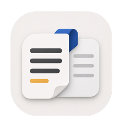
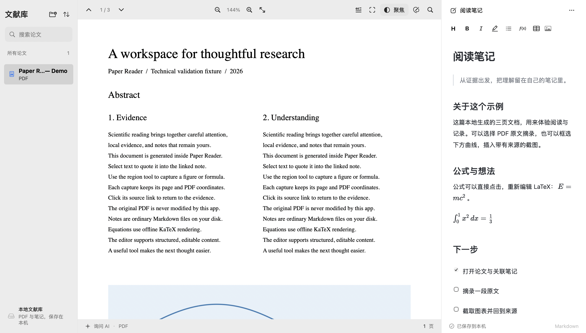

专心读，逐行读。
整屏暗场收起干扰，只照亮当前栏的文字。点击固定一行，用上下箭头继续阅读，再点一下回到鼠标跟随。
多栏感知 · 可调范围 · 全屏支持
Paper Reader把原文、笔记与思考放在一起。
少一点来回切换，多一点深入理解。

保留熟悉的阅读与写作习惯，把重复的整理交给工作台。
整屏暗场收起干扰，只照亮当前栏的文字。点击固定一行，用上下箭头继续阅读，再点一下回到鼠标跟随。
多栏感知 · 可调范围 · 全屏支持一篇论文，一份关联笔记。即时 Markdown 编辑、可重编辑的公式、表格与图表，让记录自然跟上思考。
离线 KaTeX · 自动保存 · PDF 导出直接从 PDF 高清渲染截图，插入当前笔记。页码与坐标一起保留，点击来源，就回到当时看到的证据。
原文引用 · 高清截图 · 来源回跳带着选区、当前论文和笔记向 AI 提问。把公式讲清楚，把方法理顺，或为笔记提出修改。
修改先预览差异，由你确认后应用，并且可以撤销。模型服务由你选择：Codex、兼容云端 API，或本机运行的兼容推理服务。
AI 为可选功能。联网服务会接收所选论文与笔记的上下文；本机 Codex 进程不代表离线模型。回答仍需核查。
原始 PDF 保持原样。笔记是普通的 Markdown，图片独立存放，关联索引保存在本地。无需账户，也能完成阅读和记录。
批注独立保存，可另外导出含批注的副本。
标准文件与相对资源路径，方便访问、迁移和备份。
预览版准备中。正式签名与 Apple 公证尚未完成。
打开 DMG，将 Paper Reader 拖入 Applications。应用内可检查后续更新。